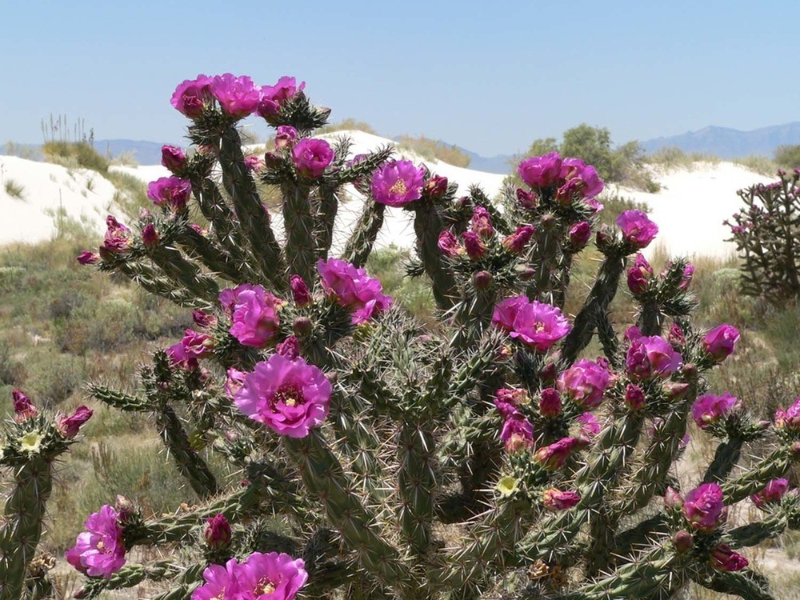
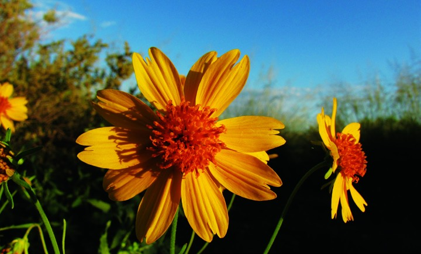
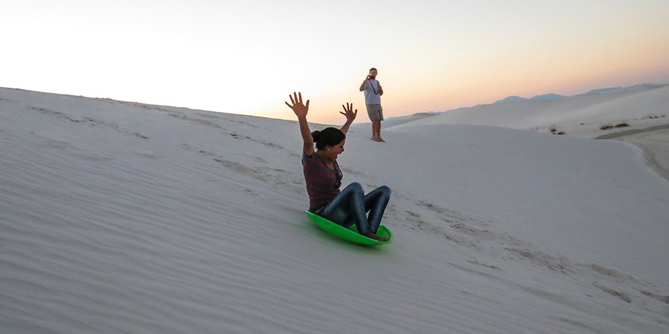
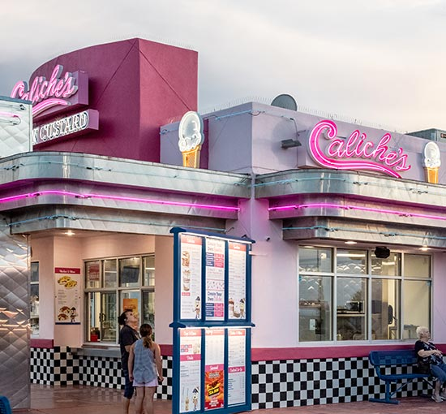
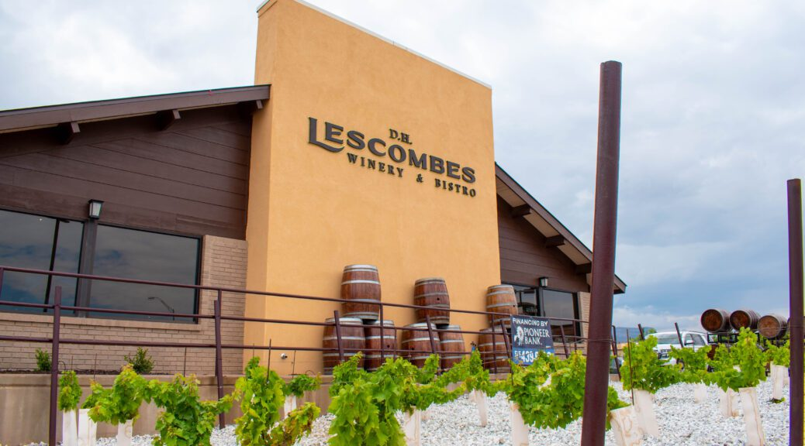
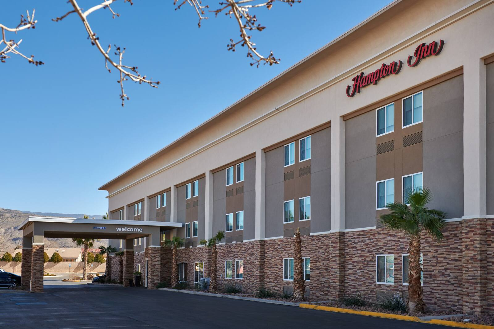
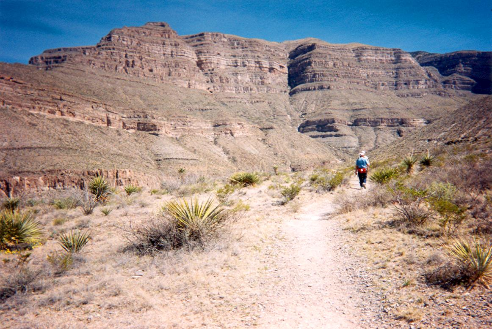

Gypsum
The pale mineral gives these dunes their distinctive color. Light and shadow make their contours visible.

FIELD NOTES 01 / TULAROSA BASIN, NEW MEXICO
01 / THE SURFACE
 DETAIL 01 / WIND PATTERN
DETAIL 01 / WIND PATTERNThe dunes are gypsum, rather than the quartz sand familiar from many beaches.
Wind moves the pale grains into ridges and slopes. White Sands National Park protects part of a larger dunefield in the Tularosa Basin. Its surface keeps changing, even when the landscape appears still.
LOOKING CLOSER
The pale mineral gives these dunes their distinctive color. Light and shadow make their contours visible.
Ripples, ridges and slopes record the movement of sand. A small detail can reveal the same forces at work across the basin.
Plants and animal tracks break up the open sand. Some White Sands animals have pale coloration that helps them blend into the gypsum dunes.
THE LIVING DESERT
Against the pale dunes, yellow petals and pink cactus flowers become small, concentrated fields of color.


The close views change the scale of the story, from the open dunefield to individual stems and petals. Species identification and photographer credits remain under review.
 PRESENT-DAY LANDSCAPE / NOT A FOSSIL-TRACK PHOTOGRAPH
PRESENT-DAY LANDSCAPE / NOT A FOSSIL-TRACK PHOTOGRAPH02 / BEFORE THE DUNES
Human footprints survive in sediments associated with ancient Lake Otero.
National Park Service and U.S. Geological Survey research places some tracks approximately 21,000–23,000 years in the past. They preserve evidence of people moving through a landscape very different from the dunes we see today.
White Sands National Park and White Sands Missile Range are different places. The Trinity test occurred on July 16, 1945, at a site now within the missile range.

WHITE SANDS / NPS PHOTOON THE DUNES
The same slope that catches a long evening shadow can carry a quick ride downhill.
Sledding is part of the White Sands experience. Waxed plastic saucers work best on the sand. Choose a gentle slope with a clear, level run-off, sit with feet downhill, and keep away from roads and vegetation.
Sledding is prohibited around the Interdune Boardwalk. Source: National Park Service, White Sands sledding guidance. Image-specific rights review remains open.
04 / INTO THE LANDSCAPE
Walking, sledding and ranger programs are part of the visitor experience described in the research. Check official conditions, access and preparation guidance before a trip.
A STUDY IN LIGHT
Compare the pale surface with the deeper blue shadows of late light. Drag the divider across the two photographs.

04 / WALKING THROUGH THE STUDY
The presentation follows a change of scale: basin, dune, ripple, footprint.
A wide view establishes the pale ground and distant mountains. The next image brings the surface closer. Repeated ridges replace the horizon as the organizing line, and the viewer begins to read the sand as texture rather than distance.
At sunset, the same material takes on a different weight. The sky grows saturated while the foreground darkens. The pale sand reflects blue shadows and the warmer colors of the sky.
The sequence then moves backward in time, to Lake Otero and the preserved human tracks. The tracks record human movement, but they cannot tell us every detail of the people who left them.
05 / AROUND THE DUNES
Alamogordo provides the nearby town setting for the White Sands study.
The visitor center is on U.S. 70, about 15 miles west of Alamogordo and 52 miles east of Las Cruces. El Paso is the nearest airport, about 85 miles away. Public transportation does not serve the park; plan a vehicle for the return journey as well as arrival.
Marked trails, sledding, picnic areas and ranger programs appear in the supplied research. Water, changing weather and access conditions belong in any visitor plan. Park hours and programs vary. Check conditions before traveling, including temporary road closures associated with missile-range testing.
Moonlit dunes and night skies are visual research subjects in the presentation. Nighttime access requires attention to authorized hours and programs. The region’s military history is a separate thread: the Trinity test occurred in 1945 at a site now within White Sands Missile Range, outside the national park.
ALAMOGORDO / THE GATEWAY CITY
The town gives a visit its everyday setting: homes, restaurants, and a place to return after time on the sand.
Alamogordo city, New Mexico.
U.S. Census Bureau, Vintage 2025.
These are resident statistics for Alamogordo, not park visitor demographics. Source: U.S. Census Bureau QuickFacts.
ALAMOGORDO / A TABLE IN TOWN

A little sweet.
Frozen custard after a day on the dunes. The Green Chile Sundae pairs vanilla custard with Caliche’s own green-chile topping.
Photograph: Caliche’s / official Alamogordo location page.

A longer pause.
A winery and bistro for a sit-down meal in town. The Alamogordo location has dining and patio space.
Photograph: D.H. Lescombes / official Alamogordo location page.
Also in town: Rizo’s, 1480 N. White Sands Boulevard, serves tacos, enchiladas and Mexican dishes. Inside White Sands, the trading post offers ready-to-eat food and drinks. Business details checked November 1, 2026.
A ROOM IN TOWN / A TRAIL BEYOND IT

01 / A BASE IN TOWN
A hotel option outside the national park, with a place to return after the drive through the dunes. Confirm rooms and rates before traveling.

02 / ANOTHER LANDSCAPE
Leave the pale dunefield for the rock and open views of Dog Canyon. NPS lists Oliver Lee as an area camping option about 24 miles from White Sands. Trail preparation, campsite availability and reservations need their own planning.
The White Sands visitor center has information, exhibits and a park store. Dunes Drive has picnic areas and vault toilets. Refuel in town; the park has no EV charging facilities.
White Sands has no hotel or RV/car camping. Backcountry camping is currently closed, so overnight stays are not available in the national park. Sources: NPS visitor pages and the businesses’ own location pages. Checked November 1, 2026.
RESEARCH & IMAGE NOTES
Brooke Howard / See America
Independent student editorial design study.
The supplied White Sands research companion, production notes and PowerPoint provide the factual foundation. They identify National Park Service White Sands research and the NPS fossilized-footprints account as primary sources. The ancient-track dates are supported by NPS and USGS research. Current demographic and visitor details were checked against Census QuickFacts and official visitor pages.
Background design by Brooke C Borgman, embedded from the supplied Canva design. The landscape and visitor research remain in the foreground.
Landscape photographs come from the supplied archive, where they are attributed to the National Park Service. Individual photographer credits and original rights records remain to be verified. Hospitality photographs are from Caliche’s official locations page, D.H. Lescombes’ Alamogordo page, and Hilton’s Hampton Inn Alamogordo gallery. The Dog Canyon photograph is from New Mexico State Parks. Those images retain their respective owners’ rights; reuse permission has not been independently confirmed. Fonts: Barlow Condensed by Jeremy Tribby, Fraunces by Undercase Type, and DM Sans from Google Fonts; SIL Open Font License files accompany the site assets.